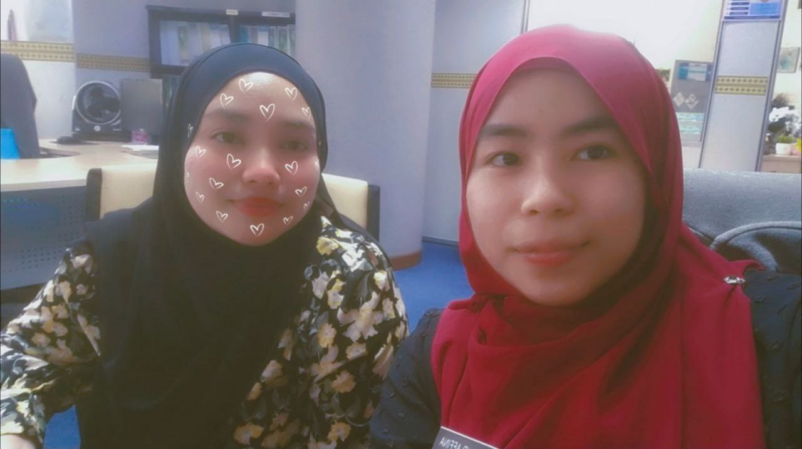
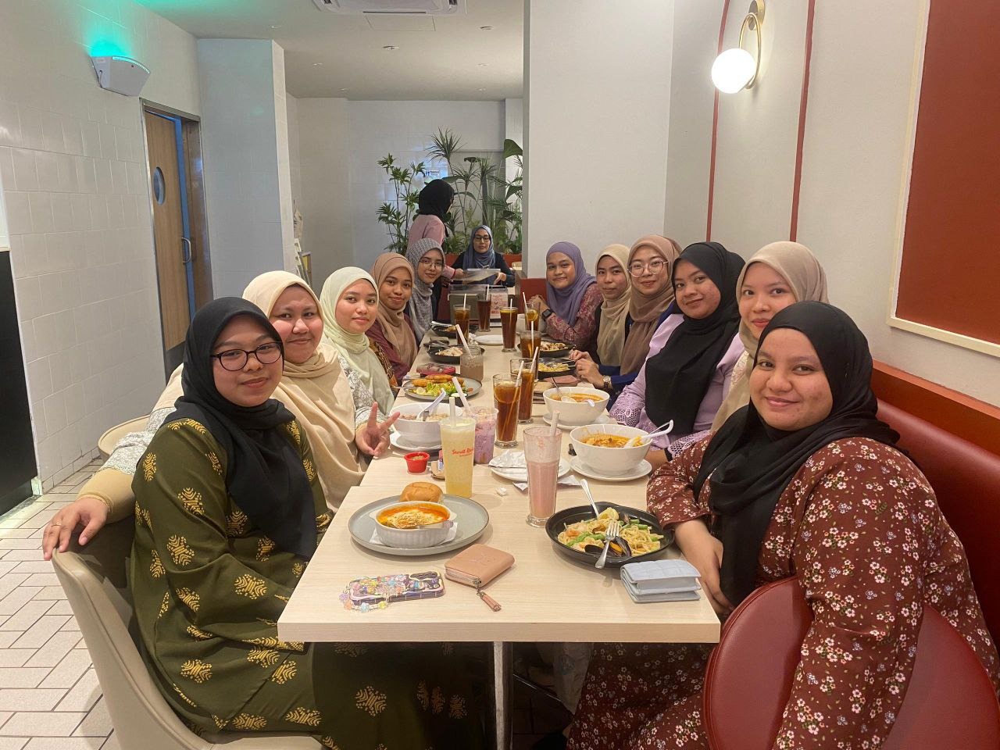
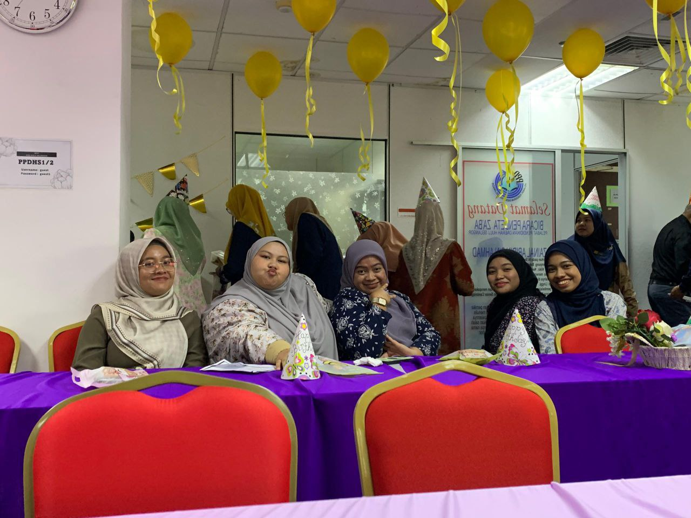
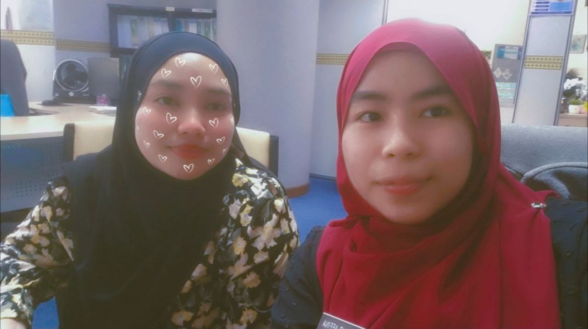
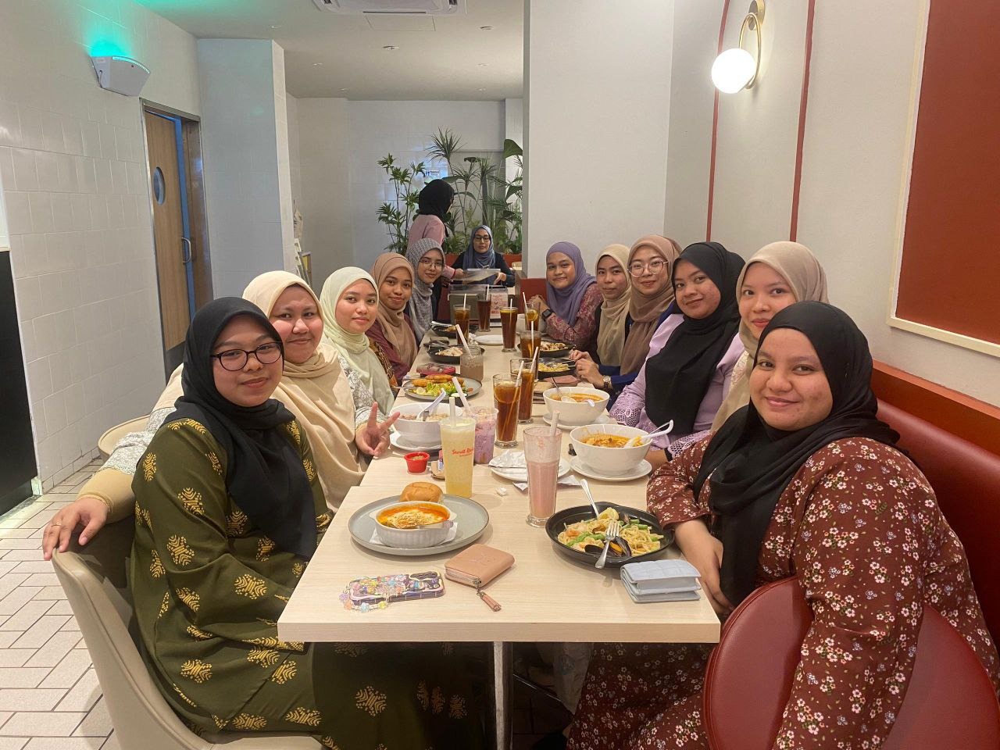
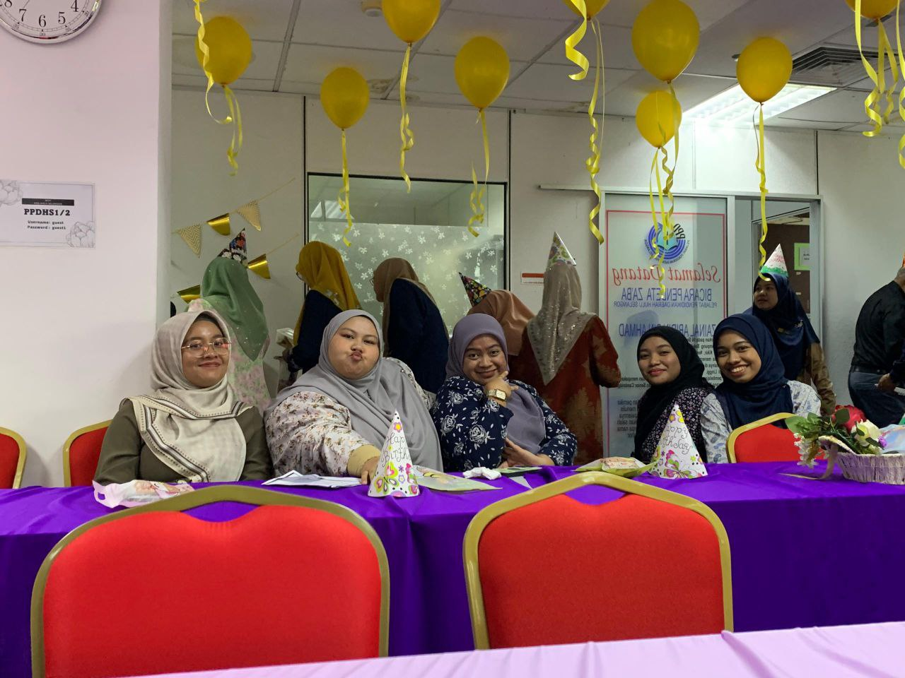

Intern Experience
Intern Experience
PPDHS from (July 2024 - Sept 2024)
During my internship at the PPDHS from July to September 2024, I had the opportunity to immerse myself in a professional work environment for the first time. This experience allowed me to develop essential skills such as time management, teamwork, and effective communication. I gained practical knowledge in administrative tasks, attended formal meetings, and contributed to organizational processes. The guidance and mentorship I received from the staff were invaluable, helping me to grow both personally and professionally. This internship not only broadened my understanding of workplace dynamics but also reinforced my passion for continuous learning and self-improvement.
Intern Photos
 





This is the photo during my intern experience.
Skills
| Skill | Level |
|---|---|
| Microsoft Word | |
| Microsoft PowerPoint | |
| Microsoft Excel | |
| Canva |